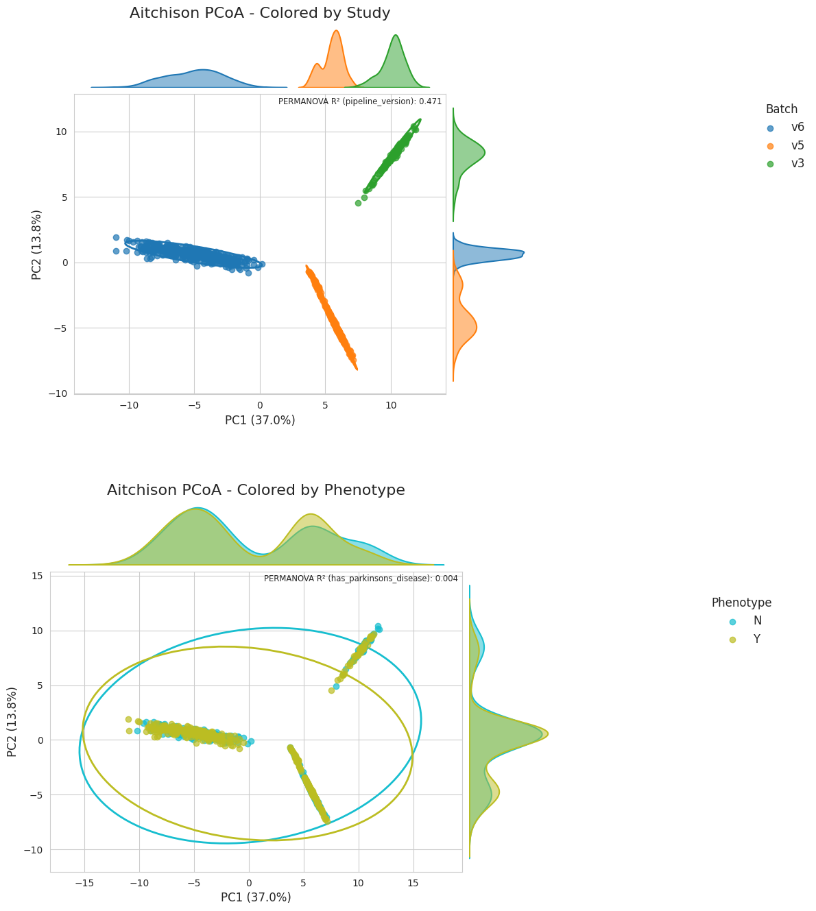
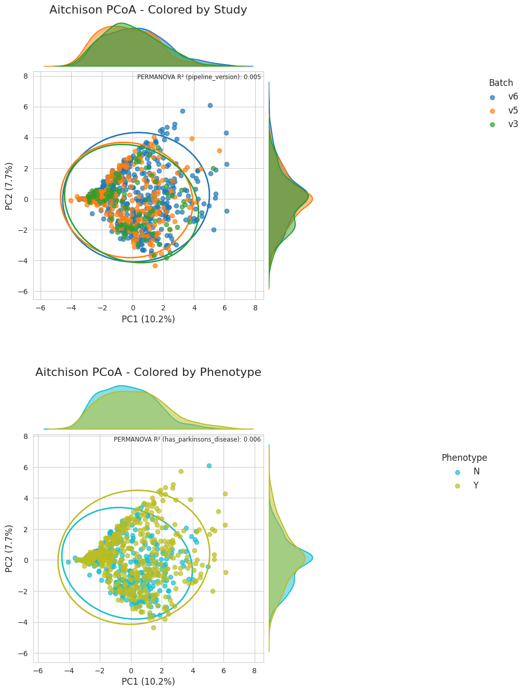

Part 2: Integrating Parkinson’s disease cohorts#
This notebook is a continuation of demoing the utility of mgnipy in curating cross-study datasets from MGnify for secondary analysis.
Here we further preprocess the curated dataset we obtained from Part 1. Specifically we preprocess the count data and then use ABaCo for batch/technical variance correction, following their PD demo
Using abaco we aim to mitigate the technical variance across the 6 MGnify studies.
# uncomment if colab
# !pip install abaco
Loading the dataset from Part 1#
import anndata as ad
import httpx
from io import BytesIO
url = "https://github.com/EBI-Metagenomics/mgnipy/raw/refs/heads/tidyup-demos/docs/notebooks/demos/pd.h5ad"
r = httpx.get(url, follow_redirects=True)
r.raise_for_status()
# read in
ad_tax = ad.read_h5ad(
BytesIO(r.content)#'pd.h5ad'
)
# check it out
ad_tax
AnnData object with n_obs × n_vars = 1606 × 3247
obs: 'experiment_type', 'instrument_model', 'instrument_platform', 'sample_accession', 'study_accession', 'updated_at', 'run_accession', 'status', 'pipeline_version', 'sample__accession', 'sample__ena_accessions', 'sample__sample_title', 'sample__biome', 'sample__updated_at', 'study__accession', 'study__ena_accessions', 'study__title', 'study__updated_at', 'study__biome.biome_name', 'study__biome.lineage', 'study__metadata.study_name', 'study__metadata.center_name', 'study__metadata.study_title', 'study__metadata.study_accession', 'study__metadata.study_description', 'study__metadata.secondary_study_accession', 'GivenID', 'RunID', 'SRA accession', 'name', 'taxid', 'ENA first public', 'ENA-CHECKLIST', 'External Id', 'INSDC center name', 'INSDC last update', 'INSDC status', 'Submitter Id', 'broad-scale environmental context', 'collection date', 'description', 'environmental medium', 'geographic location (country and/or sea)', 'geographic location (latitude)', 'geographic location (longitude)', 'host age', 'host diet', 'host disease status', 'host family relationship', 'host sex', 'host subject id', 'local environmental context', 'organism', 'project name', 'scientific_name', 'sequencing method', 'title', 'ENA-FIRST-PUBLIC', 'ENA-LAST-UPDATE', 'INSDC first public', 'age', 'body product', 'disease status', 'environment (biome)', 'environment (feature)', 'environment (material)', 'geographic location (countryand/orsea,region)', 'human gut environmental package', 'investigation type', 'medical history performed', 'miscellaneous parameter', 'multiplex identifiers', 'pcr primers', 'sex', 'target gene', 'target subfragment', 'host body product', 'parkinson', 'timepoint', 'sample collection device or method', 'sample storage duration', 'sample storage temperature', 'gastrointestinal tract disorder', 'INSDC secondary accession', 'NCBI submission model', 'NCBI submission package', 'env_broad_scale', 'env_local_scale', 'env_medium', 'geo loc name', 'host', 'host_phenotype', 'isolate', 'status__biosamples_metadata', 'isolation source', 'lat lon', 'collection_date', 'descrip', 'geo_loc_name', 'isolation_source', 'lat_lon', 'Age_at_collection', 'Anti_inflammatory_drugs', 'Antibiotics_current', 'Antibiotics_past_3_months', 'Antihistamines', 'Asthma_or_COPD_med', 'BMI', 'BioSampleModel', 'Birth_control_or_estrogen', 'Blood_pressure_med', 'Blood_thinners', 'Bristol_stool_chart', 'Case_status', 'Celiac_disease', 'Cholesterol_med', 'Co_Q_10', 'Colitis', 'Constipation', 'Crohns_disease', 'Day_of_stool_collection_abdominal_pain', 'Day_of_stool_collection_bloating', 'Day_of_stool_collection_diarrhea', 'Day_of_stool_collection_excess_gas', 'Depression_anxiety_mood_med', 'Diabetes_med', 'Diarrhea', 'Do_you_drink_alcohol', 'Do_you_drink_caffeinated_beverages', 'Do_you_smoke', 'GI_cancer_past_3_months', 'Gained_10lbs_in_last_year', 'Hispanic_or_Latino', 'How_often_do_you_eat_FRUITS_or_VEGETABLES', 'How_often_do_you_eat_GRAINS', 'How_often_do_you_eat_NUTS', 'How_often_do_you_eat_POULTRY_BEEF_PORK_SEAFOOD_EGGS', 'How_often_do_you_eat_YOGURT', 'IBD', 'IBS', 'INSDC center alias', 'Indigestion_drugs', 'Intestinal_disease', 'Jewish_ancestry', 'Laxatives', 'Loss_10lbs_in_last_year', 'Pain_med', 'Probiotic', 'Race', 'Radiation_Chemo', 'SIBO', 'Sex', 'Sleep_aid', 'Thyroid_med', 'Ulcer_past_3_months', 'broker name', 'collection_method', 'Day_of_stool_collection_constipation', 'Day_of_stool_collection_digestion_issue', 'has_parkinsons_disease'
var: 'Superkingdom', 'Kingdom', 'Phylum', 'Class', 'Order', 'Family', 'Genus', 'Species'
Preprocessing the counts#
and we will agglomerate to Genus level
Num samples after filtering for low library counts: 803
Num features after agglomerating to genus level (w/ pruning): 465
Num features after filtering for prevalence threshold of 10%: 84
AnnData object with n_obs × n_vars = 803 × 84
obs: 'experiment_type', 'instrument_model', 'instrument_platform', 'sample_accession', 'study_accession', 'updated_at', 'run_accession', 'status', 'pipeline_version', 'sample__accession', 'sample__ena_accessions', 'sample__sample_title', 'sample__biome', 'sample__updated_at', 'study__accession', 'study__ena_accessions', 'study__title', 'study__updated_at', 'study__biome.biome_name', 'study__biome.lineage', 'study__metadata.study_name', 'study__metadata.center_name', 'study__metadata.study_title', 'study__metadata.study_accession', 'study__metadata.study_description', 'study__metadata.secondary_study_accession', 'GivenID', 'RunID', 'SRA accession', 'name', 'taxid', 'ENA first public', 'ENA-CHECKLIST', 'External Id', 'INSDC center name', 'INSDC last update', 'INSDC status', 'Submitter Id', 'broad-scale environmental context', 'collection date', 'description', 'environmental medium', 'geographic location (country and/or sea)', 'geographic location (latitude)', 'geographic location (longitude)', 'host age', 'host diet', 'host disease status', 'host family relationship', 'host sex', 'host subject id', 'local environmental context', 'organism', 'project name', 'scientific_name', 'sequencing method', 'title', 'ENA-FIRST-PUBLIC', 'ENA-LAST-UPDATE', 'INSDC first public', 'age', 'body product', 'disease status', 'environment (biome)', 'environment (feature)', 'environment (material)', 'geographic location (countryand/orsea,region)', 'human gut environmental package', 'investigation type', 'medical history performed', 'miscellaneous parameter', 'multiplex identifiers', 'pcr primers', 'sex', 'target gene', 'target subfragment', 'host body product', 'parkinson', 'timepoint', 'sample collection device or method', 'sample storage duration', 'sample storage temperature', 'gastrointestinal tract disorder', 'INSDC secondary accession', 'NCBI submission model', 'NCBI submission package', 'env_broad_scale', 'env_local_scale', 'env_medium', 'geo loc name', 'host', 'host_phenotype', 'isolate', 'status__biosamples_metadata', 'isolation source', 'lat lon', 'collection_date', 'descrip', 'geo_loc_name', 'isolation_source', 'lat_lon', 'Age_at_collection', 'Anti_inflammatory_drugs', 'Antibiotics_current', 'Antibiotics_past_3_months', 'Antihistamines', 'Asthma_or_COPD_med', 'BMI', 'BioSampleModel', 'Birth_control_or_estrogen', 'Blood_pressure_med', 'Blood_thinners', 'Bristol_stool_chart', 'Case_status', 'Celiac_disease', 'Cholesterol_med', 'Co_Q_10', 'Colitis', 'Constipation', 'Crohns_disease', 'Day_of_stool_collection_abdominal_pain', 'Day_of_stool_collection_bloating', 'Day_of_stool_collection_diarrhea', 'Day_of_stool_collection_excess_gas', 'Depression_anxiety_mood_med', 'Diabetes_med', 'Diarrhea', 'Do_you_drink_alcohol', 'Do_you_drink_caffeinated_beverages', 'Do_you_smoke', 'GI_cancer_past_3_months', 'Gained_10lbs_in_last_year', 'Hispanic_or_Latino', 'How_often_do_you_eat_FRUITS_or_VEGETABLES', 'How_often_do_you_eat_GRAINS', 'How_often_do_you_eat_NUTS', 'How_often_do_you_eat_POULTRY_BEEF_PORK_SEAFOOD_EGGS', 'How_often_do_you_eat_YOGURT', 'IBD', 'IBS', 'INSDC center alias', 'Indigestion_drugs', 'Intestinal_disease', 'Jewish_ancestry', 'Laxatives', 'Loss_10lbs_in_last_year', 'Pain_med', 'Probiotic', 'Race', 'Radiation_Chemo', 'SIBO', 'Sex', 'Sleep_aid', 'Thyroid_med', 'Ulcer_past_3_months', 'broker name', 'collection_method', 'Day_of_stool_collection_constipation', 'Day_of_stool_collection_digestion_issue', 'has_parkinsons_disease', 'total_counts'
var: 'ranks_to_genus', 'n_obs_aggregated'
layers: 'sum', 'total_counts', 'rel_abund'
has_parkinsons_disease
Y 442
N 361
Name: count, dtype: int64
preparing dataset for ABaCo, which requires the feature cols but also:
ids
batch labels (pipeline version)
bio group labels (disease status)
df_ab = (
ad_genus_filt.obs[["has_parkinsons_disease", "pipeline_version"]]
.merge(ad_genus_filt.to_df(layer="sum"), left_index=True, right_index=True)
.reset_index()
)
df_ab.to_csv("pd_gut_genus.csv", index=False)
df_ab.head()
Batch correction with ABaCo#
the below code is from their demo notebook

from abaco.ABaCo import metaABaCo
import torch
device = torch.device("cuda" if torch.cuda.is_available() else "cpu")
# Create ABaCo model
abaco_model = metaABaCo(
data=df_parkinson,
n_bios=df_parkinson[bio_col].nunique(),
bio_label=bio_col,
n_batches=df_parkinson[batch_col].nunique(),
batch_label=batch_col,
n_features=df_parkinson.select_dtypes(include="number").shape[1],
# prior="VMM",
device=device,
epochs=[1000, 2000, 1000],
)
abaco_model.fit(
seed=42,
w_cluster_penalty=0.1, # 0.1
phase_1_vae_lr=1e-3, # 1e-3
phase_2_vae_lr=1e-3, # 1e-3
phase_3_vae_lr=1e-7, # 1e-7
adv_lr=1e-4, # 1e-4
disc_lr=1e-4,
) # 1e-4

import abaco.metrics as metrics
print("kBET results before batch correction:")
print(metrics.kBET(data_clr, batch_col))
print("\niLISI results before batch correction:")
print(metrics.iLISI_norm(data_clr, batch_col))
print("\nbatch ASW results before batch correction:")
print(1 - metrics.ASW(data_clr, batch_col))
print("\nbatch ARI results before batch correction:")
print(1 - metrics.ARI(data_clr, batch_col))
print("\n\nkBET results after batch correction:")
print(metrics.kBET(corrected_data_clr, batch_col))
print("\niLISI results after batch correction:")
print(metrics.iLISI_norm(corrected_data_clr, batch_col))
print("\nbatch ASW results after batch correction:")
print(1 - metrics.ASW(corrected_data_clr, batch_col))
print("\nbatch ARI results after batch correction:")
print(1 - metrics.ARI(corrected_data_clr, batch_col))
kBET results before batch correction:
0.007471980074719801
iLISI results before batch correction:
0.004610259622757962
batch ASW results before batch correction:
0.651118705750787
batch ARI results before batch correction:
0.47724063865900734
kBET results after batch correction:
0.8617683686176837
iLISI results after batch correction:
0.6918085502345057
batch ASW results after batch correction:
1.0169824082404375
batch ARI results after batch correction:
1.005102081522553
batch corrected.